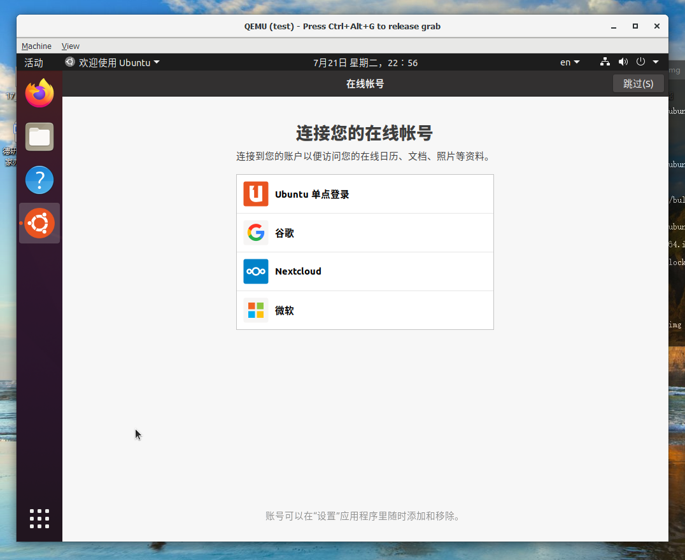

QEMU安装 Ubuntu 20.04
内容：在win10下，QEMU安装 Ubuntu 20.04
准备环境
- 磁盘大小在100G
- haxm工具（intel开源的加速qemu驱动）
- Ubuntu 20.04 的桌面版本ISO文件（去官网下载）
- 检查您的BIOS（或UEFI引导固件）设置，并确保已启用VT-x（或虚拟化技术，具体取决于您的BIOS）
- Intel的处理器（保证haxm的运行坏境）
- Hyper-V功能的禁用
在QEMU安装目录下创建相应文件夹，命名：workspace。其中包含子文件夹img、tool、ubuntu。解释如下：
| 名字 | 功能 |
|---|---|
| img | 存放映像格式文件（disk image） |
| tool | 存放使用到工具文件、安装包等 |
| ubuntu | 存放镜像ISO文件 |
将相应文件下载到指定文件夹，本次使用到文件有：ubuntu-20.04-desktop-amd64.iso、haxm-windows_v7_6_1.zip、qemu-w64-setup-20200612.exe。
安装软件包
- 安装haxm
- 安装qemu
- Hyper-V功能的禁用和BIOS设置启用虚拟化（VT-x）（注：这部分不懂请看这里，Accelerating QEMU on Windows with HAXM）
开始安装ubuntu
- 在QEMU安装文件下，启动CMD命令提示符
- 创建img文件
- 启动QEMU的VM，安装ubuntu
## 创建盘
qemu-img.exe create -f qcow2 .\workspace\img\ubuntu.img 60G
## 启动虚拟机，第一次加载引导程序
qemu-system-x86_64.exe -name test -m 4096 -machine accel=hax -cdrom .\workspace\ubuntu\ubuntu-20.04-desktop-amd64.iso .\workspace\img\ubuntu.img
## -m 4096 设置内存
## -machine accel=hax 加速
## 启动虚拟机, 第二次启动，以后都可以用这种方式启动
qemu-system-x86_64.exe -name test -m 4096 -machine accel=hax .\workspace\img\ubuntu.img
按照ubuntu安装设置，进行安装
提示：为了提高安装速度尽量不要使用，网络连接更新下载等操作。
